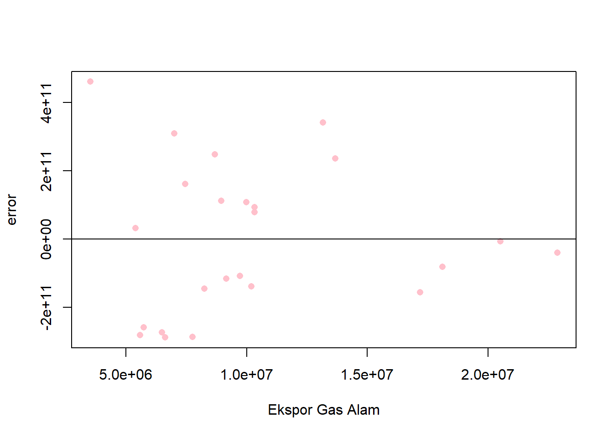
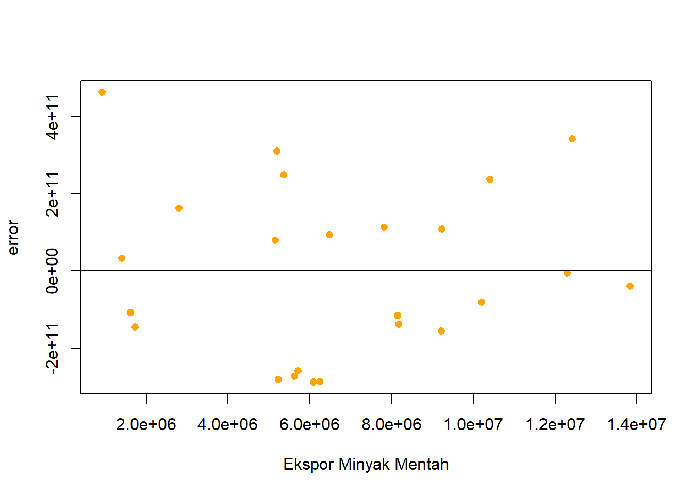

Pengaruh Ekspor Gas Alam dan Minyak Mentah terhadap GDP Indonesia
Metode Penelitian Politeknik APP Jakarta
Author
Silvina Dara Zelita
Published
November 5, 2024
logo
1 Pendahuluan
1.1 Latar belakang
Ekspor gas alam dan minyak mentah merupakan elemen penting dalam perekonomian Indonesia, memberikan kontribusi signifikan terhadap Produk Domestik Bruto (GDP) negara. Sebagai negara dengan cadangan energi yang melimpah, Indonesia telah lama menjadi salah satu eksportir utama gas alam cair (LNG) di dunia. Meskipun posisinya mengalami penurunan pangsa pasar global akibat berbagai faktor, termasuk kebijakan pemerintah dan fluktuasi harga energi internasional, sektor migas tetap berperan strategis dalam ekonomi nasional.
Ekspor sektor migas, termasuk gas alam, memiliki dampak yang kompleks terhadap pertumbuhan ekonomi Indonesia. Penelitian menunjukkan bahwa ekspor sektor ini memiliki pengaruh negatif yang signifikan terhadap pertumbuhan ekonomi, meskipun kontribusinya masih sangat relevan. Volume ekspor gas alam Indonesia sangat dipengaruhi oleh pertumbuhan ekonomi negara-negara tujuan ekspornya. Peningkatan GDP di negara importir tidak selalu berbanding lurus dengan peningkatan permintaan gas dari Indonesia; kadang-kadang, kenaikan GDP di negara importir justru mengurangi volume ekspor gas dari Indonesia karena adanya sumber alternatif dan variasi dalam kebijakan energi di negara-negara tersebut. Fluktuasi harga minyak dan gas di pasar internasional juga berpengaruh terhadap volume ekspor gas alam. Kenaikan harga minyak mentah sering kali diikuti oleh penurunan volume ekspor gas alam, menunjukkan bahwa pasar energi global sangat saling terkait. Selain itu, ketidakstabilan politik dan ekonomi di negara tujuan juga dapat mempengaruhi permintaan akan gas alam.
Pemerintah Indonesia telah berusaha untuk mengurangi ketergantungan pada ekspor gas dengan mendorong penggunaan gas domestik sebagai sumber energi utama. Tujuannya adalah untuk memastikan ketersediaan pasokan energi bagi industri dan masyarakat domestik sambil tetap mempertahankan posisi Indonesia sebagai eksportir gas. Namun, tantangan infrastruktur dan investasi yang terbatas dalam pengembangan jaringan distribusi membuat implementasi kebijakan ini tidak selalu berjalan mulus. Meskipun sektor migas memberikan kontribusi signifikan terhadap perekonomian, tantangan dalam hal diversifikasi ekonomi dan ketergantungan pada pasar internasional harus diatasi untuk memastikan pertumbuhan ekonomi yang berkelanjutan. Kebijakan pemerintah yang mendukung penggunaan gas domestik serta investasi dalam infrastruktur akan menjadi kunci untuk meningkatkan kontribusi positif sektor ini terhadap GDP Indonesia di masa depan. Dengan demikian, pengaruh ekspor gas alam dan minyak mentah terhadap GDP Indonesia adalah kompleks dan dipengaruhi oleh berbagai faktor internal dan eksternal. Oleh karena itu, perlu adanya strategi yang komprehensif untuk mengoptimalkan potensi sektor migas sambil mengatasi tantangan-tantangan yang ada.
1.2 Ruang lingkup
Dalam penelitian ini, penulis mengumpulkan data dengan menggunakan metode dokumentasi melalui laporan tahunan Badan Pusat Statistik (BPS) periode tahun 2000 sampai 2023. Selain itu, peneliti juga mengumpulkan data dari sumber internasional seperti World Bank untuk mendukung analisis. Terdapat dua variabel (X,Y dan S) dalam penelitian ini, di mana variabel X adalah ekspor gas alam ,variabel Y adalah Produk Domestik Bruto (GDP) Indonesia dan variable S nya adalah minyak bumi. Data bersifat time series dalam kurun waktu 2000 hingga 2023, dengan satuan dalam juta dolar untuk memperpendek penulisan angka.
1.3 Rumusan masalah
Penelitian ini akan menjawab persoalan mengenai:
Seberapa besar kontribusi ekspor gas alam dan minyak mentah terhadap pertumbuhan GDP Indonesia?
Bagaimana perubahan harga gas alam dan minyak mentah global memengaruhi kinerja ekspor gas alam dan minyak mentah Indonesia?
Apa saja tantangan yang dihadapi Indonesia dalam mempertahankan posisi sebagai eksportir gas alam dan minyak mentah di pasar global?
1.4 Tujuan dan manfaat penelitian
Tujuan penelitian ini dirumuskan untuk memberikan manfaat bagi pemerintah dan masyarakat, dengan fokus pada pengembangan sektor gas alam dan minyak mentah serta dampaknya terhadap perekonomian Indonesia.
1. Bagi Pemerintah Penelitian ini bertujuan memberikan rekomendasi kebijakan berbasis data untuk meningkatkan kinerja ekspor gas alam dan minyak mentah serta kontribusinya terhadap GDP Indonesia. Selain itu, penelitian ini akan mengidentifikasi strategi optimasi pemanfaatan sumber daya gas alam dan minyak mentah guna mendukung pertumbuhan ekonomi yang berkelanjutan dan mendorong inovasi serta diversifikasi energi.
2. Bagi Masyarakat Penelitian ini bertujuan meningkatkan kesadaran publik tentang peran ekspor gas alam dan minyak mentah dalam perekonomian nasional dan dampaknya terhadap kesejahteraan masyarakat. Penelitian ini juga mengajak masyarakat berpartisipasi dalam pengambilan keputusan terkait kebijakan energi, serta memberikan kontribusi pada peningkatan kualitas hidup melalui penyediaan energi yang lebih baik dan berkelanjutan.
1.5 Package
Sebagai penunjang regresi multivariat dalam penelitian digunakan beberapa packages antara lain:
library(tidyverse)
Warning: package 'tidyverse' was built under R version 4.3.3
Warning: package 'ggplot2' was built under R version 4.3.3
Warning: package 'tidyr' was built under R version 4.3.3
Warning: package 'readr' was built under R version 4.3.3
Warning: package 'purrr' was built under R version 4.3.3
Warning: package 'dplyr' was built under R version 4.3.3
Warning: package 'stringr' was built under R version 4.3.3
Warning: package 'forcats' was built under R version 4.3.3
Warning: package 'lubridate' was built under R version 4.3.3
── Attaching core tidyverse packages ──────────────────────── tidyverse 2.0.0 ──
✔ dplyr 1.1.4 ✔ readr 2.1.5
✔ forcats 1.0.0 ✔ stringr 1.5.1
✔ ggplot2 3.5.1 ✔ tibble 3.2.1
✔ lubridate 1.9.3 ✔ tidyr 1.3.1
✔ purrr 1.0.2
── Conflicts ────────────────────────────────────────── tidyverse_conflicts() ──
✖ dplyr::filter() masks stats::filter()
✖ dplyr::lag() masks stats::lag()
ℹ Use the conflicted package (<http://conflicted.r-lib.org/>) to force all conflicts to become errors
library(readxl)
Warning: package 'readxl' was built under R version 4.3.3
2 Studi pustaka
Penelitian ini membahas berbagai aspek terkait ekspor gas alam dan minyak mentah Indonesia, dengan fokus pada kontribusinya terhadap pertumbuhan GDP, pengaruh harga global, dan tantangan yang dihadapi dalam mempertahankan posisi sebagai eksportir. Ekspor gas alam, terutama dalam bentuk Liquefied Natural Gas (LNG), dan minyak mentah telah menjadi salah satu pilar penting dalam perekonomian Indonesia. Dalam beberapa tahun terakhir, volume ekspor gas alam dan minyak mentah Indonesia mengalami penurunan yang signifikan, meskipun nilai ekspor terkadang menunjukkan tren yang berbeda. Penurunan ini mencerminkan dinamika pasar yang kompleks dan tantangan yang dihadapi oleh kedua sektor ini.
Fluktuasi harga di pasar internasional adalah salah satu faktor kunci yang mempengaruhi kinerja ekspor gas alam dan minyak mentah. Perubahan harga global dapat berdampak langsung pada daya saing ekspor Indonesia. Ketidakpastian harga dapat memengaruhi keputusan investasi dan produksi di sektor migas, serta berdampak pada pendapatan negara. Dalam konteks ini, kontrak jangka panjang sering kali diadopsi sebagai strategi untuk menjamin stabilitas pendapatan, meskipun ada risiko terkait dengan fluktuasi harga pasar.
Tantangan lain yang dihadapi Indonesia dalam mempertahankan posisinya sebagai eksportir gas dan minyak adalah keterbatasan infrastruktur dan distribusi. Infrastruktur yang ada saat ini masih sangat terbatas, dan distribusi gas serta minyak sering kali tidak merata di berbagai wilayah. Keterbatasan ini menyulitkan pemenuhan kebutuhan domestik dan menghambat potensi ekspor. Pemerintah juga dituntut untuk memastikan ketersediaan pasokan dari produksi domestik dan impor untuk memenuhi kebutuhan energi nasional.
Pemerintah telah berupaya untuk meningkatkan penggunaan gas dan minyak domestik sambil tetap menjaga komitmen ekspor. Namun, kebijakan ini harus diimbangi dengan pengembangan infrastruktur yang memadai dan peningkatan investasi di sektor migas. Penelitian sebelumnya menunjukkan bahwa koordinasi antara berbagai pihak terkait sangat penting untuk memastikan keberhasilan kebijakan yang diterapkan. Secara keseluruhan, penelitian ini menyoroti pentingnya memahami dinamika pasar gas alam dan minyak mentah serta tantangan yang dihadapi Indonesia dalam mempertahankan posisinya sebagai eksportir. Oleh karena itu, penelitian lebih lanjut diperlukan untuk mengeksplorasi strategi yang dapat meningkatkan daya saing sektor gas alam dan minyak mentah Indonesia sambil memastikan keberlanjutan pasokan energi bagi masyarakat domestik.
3 Metode penelitian
3.1 Data
Tahun
Ekspor gasalam(X)
GDP INDONESIA (Y)
Ekspor Minyakmentah (S)
2000
6624900.00
165021012077.81
6090100.00
2001
5732200.00
160446947784.909
5714700.00
2002
5577600.00
195660611165.183
5227600.00
2003
6476700.00
234772463823.808
5621000.00
2004
7749600.00
256836875295.452
6241400.00
2005
9153700.00
285868619196.085
8145800.00
2006
10197100.00
364570515618.357
8168800.00
2007
9983800.00
432216737774.861
9226000.00
2008
13160500.00
510228634990.598
12418700.00
2009
8935700.00
539580085616.492
7820300.00
2010
13669400.00
755094157621.936
10402900.00
2011
22871500.00
892969104563.171
13828700.00
2012
0511300.00
917869913332.649
12293400.00
2013
18118600.00
912524136718.018
10204700.00
2014
17175800.00
890814755533.537
9215000.00
2015
10328600.00
860854232686.214
6479400.00
2016
6992400.00
931877364037.698
5196700.00
2017
8670900.00
1015618744159.73
5354900.00
2018
10320400.00
1042271532988.63
5151900.00
2019
8251700.00
1119099871350.2
1726600.00
2020
5397500.00
1059054842698.48
1396900.00
2021
7451000.00
1186509691086.73
2795900.00
2022
9711900.00
1319076267310.16
1615300.00
2023
3515800.00
1371171152331.16
916600.00
Penelitian ini menggunakan bentuk data time series dalam kurun waktu tahun 2000 hingga 2023, dengan current US$.
library(readxl)metopen$m<-resid(reg2)plot(metopen$X,metopen$m,xlab="Ekspor Gas Alam",ylab="error",col='pink',pch=16)abline(h=0)

plot pengaruh eror terhadap Ekspor Gas Alam
library(readxl)metopen$m<-resid(reg2)plot(metopen$S,metopen$m,xlab="Ekspor Minyak Mentah",ylab="error",col='orange',pch=16)abline(h=0)

plot pengaruh eror terhadap Ekspor Minyak Mentah
3.2 Metode analisis
Dalam penelitian ini, peneliti memilih metode regresi multivariat. Dengan dua variabel independent yakni variabel X(Ekspor Gas Alam), dan variabel S(Ekspor Minyak Mentah). Dengan satu variabel dependen yakni GDP Indonesia. Penelitian ini dimaksud untuk mencari hubungan antara Ekspor gas alam dan minyak mentah dengan GDP Indonesia. Spesifikasi yang dilakukan adalah:
\[
y_{t}=\beta_0 + \beta_1 x_t+\beta_2s+\mu_t
\]
Dimana \(y_t\) adalah GDP dan \(x_t\) adalah Ekspor Gas Alam dan \(s_t\) adalah Ekspor Minyak Mentah.
4 Pembahasan
4.1 Pembahasan masalah
Pembahasan masalah Peneliti menggunakan regresi multivariat dan didapatkan hasil data sebagai berikut:
variable
coefficients
Intercept
6.938e+11
X
1.003e+05
S
-1.485e+05
Multiple R-squared
0.6867
Adjusted R-squared
0.6569
p-value
5.101e-06
Model regresi multivariat dari output di atas adalah:
Call:
lm(formula = Y ~ X + S, data = metopen)
Residuals:
Min 1Q Median 3Q Max
-2.883e+11 -1.482e+11 -2.302e+10 1.239e+11 4.610e+11
Coefficients:
Estimate Std. Error t value Pr(>|t|)
(Intercept) 6.938e+11 1.100e+11 6.308 2.96e-06 ***
X 1.003e+05 1.621e+04 6.185 3.89e-06 ***
S -1.485e+05 2.238e+04 -6.638 1.43e-06 ***
---
Signif. codes: 0 '***' 0.001 '**' 0.01 '*' 0.05 '.' 0.1 ' ' 1
Residual standard error: 2.281e+11 on 21 degrees of freedom
Multiple R-squared: 0.6867, Adjusted R-squared: 0.6569
F-statistic: 23.01 on 2 and 21 DF, p-value: 5.101e-06
Dari hasil diatas dapat dilihat bahwa Semua p-value sangat kecil (kurang dari 0.001), yang berarti koefisien X dan S signifikan secara statistik. Ini menunjukkan bahwa pengaruh X dan S terhadap Y tidak terjadi secara kebetulan.R-squared sebesar 0.6867 mengindikasikan bahwa sekitar 68.67% variabilitas dalam Y dapat dijelaskan oleh variasi dalam X dan S.Sedangkan Adjusted R-squared 0.6569 sedikit lebih konservatif, namun tetap menunjukkan bahwa model memiliki daya prediksi yang cukup baik.
5 Kesimpulan
Dalam penelitian ini ditemukan pengaruh signifikan Ekspor Gas Alam dan minyak mentah terhadap GDP Indonesia.Dari hasil regresi yang sudah dilakukan, dapat dijelaskan bahwa Setiap kenaikan satu satuan pada variabel X yaitu Ekspor Gas Alam akan meningkatkan nilai Y atau GDP sebesar 1.003e+05. Artinya, variabel X memiliki pengaruh positif terhadap variabel Y.Sedangkan setiap kenaikan satu satuan pada variabel S yaitu Ekspor Minyak Mentah akan menurunkan nilai Y sebesar 1.485e+05. Ini menunjukkan hubungan negatif antara variabel S dan Y.Kemungkinan Ini menunjukkan bahwa Indonesia mengekspor minyak mentah dalam jumlah yang lebih sedikit dibandingkan sebelumnya. Artinya karena perekonomian Indonesia tumbuh dan menghasilkan output barang dan jasa yang lebih besar, maka permintaan akan energi, termasuk minyak mentah, akan meningkat karena digunakan untuk berbagai aktivitas produksi, dan terjadilah penurunan ekspor minyak mentah yang disebabkan oleh peningkatan konsumsi dalam negeri.
6 Referensi
Anwar, H. (2023). Dampak fluktuasi harga minyak dunia terhadap perekonomian Indonesia. Diakses dari Kementerian Keuangan Badan Pusat Statistik. (2023). Ekspor gas alam Indonesia turun terendah di 2023. Diakses dari GoodStats CEIC Data. (2023). Natural gas exports. Diakses dari CEIC Data CNBC Indonesia. (2022). RI ekspor minyak mentah tapi impor BBM, kok bisa? Diakses dari CNBC Indonesia ESDM. (2023). Harga minyak dunia melonjak, ICP Juli 2024 dipatok USD 82 per barel. Diakses dari ESDM ESDM. (2023). Harga minyak dunia turun, ICP Agustus ditetapkan USD 78,51/barel. Diakses dari ESDM ESDM. (2023). Total nilai ekspor LNG: Indonesia optimis sebagai key player LNG. Diakses dari ESDM Jurnal Kementerian Perdagangan. (2022). Analisis kebijakan ekspor energi. Diakses dari Kementerian Perdagangan Universitas Airlangga. (2023). Memahami model harga minyak mentah dunia. Diakses dari Universitas Airlangga Universitas Jambi. (2023). Analisis Ekspor Gas Alam dan Minyak Mentah. Diakses dari Repository Universitas Jambi